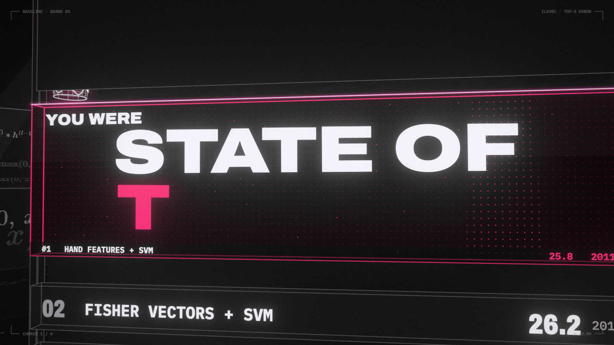
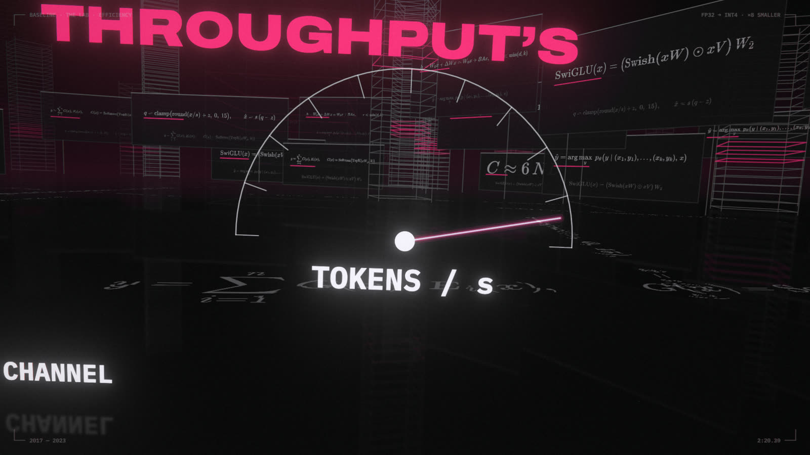

Every technique in the song was trained the same way: show the model examples, score how wrong it is, nudge the numbers to be less wrong, and repeat. This module starts one step earlier, with why anyone would build programs that way. Then it builds the loop by hand, and covers the pieces every later module assumes: classification, mini-batches, optimizers and tensor shapes.
0:52 · THE BOARD · ILSVRC · DEADLINE: the title board turns into a countdown and hits 00:00.00, the next submission deadline.
LAB · open notebooks/00_the_loop.ipynb in Jupyter. Each section below names the notebook section that runs it. Dotted words show a definition when you hover or tap them.
0.0
Why not just write the program?
Nobody can write down the rules for recognizing a handwritten 7. So we write a program template with millions of blank numbers and let an algorithm fill them in from examples.
A familiar idea first
Try writing it
MNIST is 70,000 handwritten digits, each a 28 × 28 grid of gray pixels. Write def is_seven(pixels): a horizontal stroke on top, then a diagonal down to the left. Then someone writes a 7 with a crossbar, or slanted, thick, off-center, or with a curl. Every rule needs an exception and every exception needs another. Vision engineers worked this way for decades, and the rule sets never stopped growing.
So flip the problem. Fix the shape of the program ("multiply the 784 pixels by a grid of numbers, add them up, repeat a few times, output the biggest of 10 scores") and leave the numbers blank. That template is a model, and the blanks are its parameters. Now you need an algorithm that fills in the blanks so the program gets the examples right.
It has to converge: get reliably better as it runs, not wander. The trick that works is to choose a template where nudging any one number changes the output smoothly. Then, for every blank at once, calculus tells you which direction reduces the error. That direction is the gradient. Step all of the numbers that way, and repeat. A million blanks improve together on every step. Every model in this course is a version of this idea.
0:59 · COLD STORAGE · The crown flies to the network, whose layers learn edges, textures, parts and classes on their own. Nobody wrote those rules.
Back then
Other program-generating searches came first, and some are still used. Genetic algorithms (Holland, 1975) and genetic programming (Koza, 1992) evolve candidates: mutate them, cross them over, keep the fittest. Neuroevolution (NEAT, 2002) evolved neural networks the same way. They work with few knobs, but they treat the program as a black box and learn only "better or worse" from each try, so the number of tries explodes as knobs are added. A gradient gives a direction for every knob from a single pass, which is why million-knob models are trainable at all.
The business side
This is the economic shift behind the whole course: instead of paying engineers to write and maintain rules, you pay for labeled examples and compute. Reading handwritten digits on checks and ZIP codes was one of the first jobs where that trade paid off.
Lore
Evolution still wins where there are few knobs and no gradient. NASA flew an antenna designed by a genetic algorithm on its ST5 satellites in 2006, a bent-wire shape no engineer would have drawn. In 2017 OpenAI showed evolution strategies could train some reinforcement-learning tasks competitively, mostly by spreading the work over more than a thousand CPU cores.
0.1–0.2
A model is a function with knobs
To fill in the blanks, score the program with one smooth number (the loss) and walk every number downhill.
A familiar idea first
Tuning by feel, automated
You've tuned a config value by trying a bit higher, a bit lower, and keeping whichever made the benchmark better. Gradient descent does that for every knob at once. Instead of trying both directions, calculus says which way is better and roughly by how much. That answer is the gradient. For a single knob it's just the slope of the curve.
A model is a function with tunable constants, its parameters. The loss is a test suite that returns one smooth number: how wrong the model is. Because the loss is smooth, its gradient tells you which way is downhill, and stepping that way over and over is gradient descent. The step size is the learning rate.
The math
$$L(w,b)=\frac{1}{N}\sum_i (w x_i + b - y_i)^2 \qquad w \leftarrow w - \eta\,\frac{\partial L}{\partial w}$$
LAB · notebook §0.1–0.2

0:47 · THE BOARD · ILSVRC · The champion's board: STATE OF THE ART above a real leaderboard (ImageNet top-5 error).
Back then
Before the 2010s, picking a learning rate was a dark art, with no adaptive optimizers and lots of babysitting. Adam (2014) made a sensible default possible, so most people stopped tuning by hand.
The business side
Training cost is roughly the number of gradient steps × the cost of each step, so the GPU bill, not the idea, decides what a lab can try. One frontier LLM training run now costs tens to hundreds of millions of dollars.
Lore
Andrej Karpathy, 2016: "3e-4 is the best learning rate for Adam, hands down." It was a joke, and it is still the default in a surprising amount of code. Tuning hyperparameters by trial and error is called grad student descent.
0.3
Autograd and the five-line loop
PyTorch computes every gradient for you, so training is the same five lines for every model.
A familiar idea first
Gear ratios
If gear A turns 3× as fast as B, and B turns 2× as fast as C, then A turns 6× as fast as C: multiply the ratios along the chain. That's the chain rule. Autograd records the chain of operations as your code runs, a bit like a stack trace, then walks it backwards multiplying the ratios to get every gradient.
Autograd records each operation and walks backwards with the chain rule to fill in the gradients. That's backpropagation, which Module 1 builds by hand. The heartbeat of every model in this course: forward → loss → zero_grad → backward → step.
LAB · notebook §0.3
0:49 · THE BOARD · ILSVRC · BASELINE: the old champion's nameplate hits the floor at y = 0 and magenta floods out from the impact.
Back then
Until about 2015, researchers often derived gradients by hand and checked them numerically, because one sign error could silently ruin weeks of work. Theano (2007) and then TensorFlow and PyTorch made automatic differentiation routine.
The business side
Frameworks were a platform war: Google's TensorFlow against Meta's PyTorch. PyTorch won research by being plain Python you could debug with print. Whoever owns the framework influences which hardware gets first-class support.
Lore
Forgetting optimizer.zero_grad(), so gradients keep piling up from step to step, is a rite of passage. Every PyTorch user has shipped that bug at least once.
0.4
From numbers to classes
To pick one of several answers, the model gives each answer a score, softmax turns the scores into probabilities, and the loss punishes a low probability on the right answer.
A familiar idea first
A ranked list with confidences
A search engine scores every document and shows them ranked. A classifier scores every class the same way. Softmax turns the raw scores into percentages that add up to 100%, so "how sure is it?" becomes a number you can check.
The model outputs one score per class, the logits. Softmax exponentiates and normalizes them into probabilities. The loss is cross-entropy: −log of the probability given to the correct class. Probability 1 costs 0; 0.5 costs 0.69; 0.01 costs 4.6. Predicting the next word is the same thing with a 150,000-way choice. In the lab you write cross-entropy yourself, and find out why the obvious code overflows.
0:05 · THE LINE · Four Boolean input points fall onto the unit square, and AND and OR are each cut by a single stroke. The truth table hangs in the back.
Back then
Logistic regression, the two-class version, came from statistics in the 1940s. Its many-class form (softmax regression) was the workhorse classifier long before neural networks, and it's still one of the most deployed models in industry.
The business side
For years the model deciding which ad you see was, at heart, a huge logistic regression: a softmax over two classes, click or no click. Calibrated probabilities matter for money: an ad auction bids on the probability of a click, not on a yes/no.
Lore
Softmax is named for being a "soft" maximum: as the scores spread apart, it approaches a one-hot vote for the biggest one. John Bridle coined the name around 1989–90.
0.5
The loop at scale
Real training repeats the five-line loop thousands of times on small random batches, with a smarter update rule and a step size that changes over time.
A familiar idea first
Sampling instead of a full table scan
To estimate the average order value in a big table you don't scan every row: a random sample of a few hundred gets you close, fast. A mini-batchgradient is that sample. It's noisy, but cheap enough that you can take forty steps in the time one exact step would take.
A mini-batch is a random slice of examples; an epoch is one pass over all of them. The optimizer is the update rule: plain SGD, or Adam, which adapts each parameter's step size. A learning-rate schedule warms up, then decays. Augmentation makes extra examples with changes that keep the label, such as flipping a photo. model.eval() and torch.no_grad() switch to scoring. All these settings are hyperparameters. In the lab, mini-batches reach a test loss in 15 epochs that full-batch training is nowhere near.
LAB · notebook §0.5

2:20 · THE LAB · EFFICIENCY · THROUGHPUT: the memory bar shrinks × 8 and the tokens/s gauge swings over.
Back then
Stochastic gradient descent goes back to Robbins and Monro (1951). For decades it looked too noisy for serious optimization. It took datasets too big to scan for "noisy but many steps" to win.
The business side
Batch size is a hardware decision as much as a math one. Big batches keep thousands of GPU cores busy, so training clusters are designed around how large a batch can grow before quality suffers.
Lore
Yann LeCun, 2018: "Friends dont let friends use minibatches larger than 32." Small batches tend to generalize better, a finding that keeps getting re-litigated as hardware pushes batches bigger.
0.6
Vectors, matrices and shapes
Almost everything in this course is a dot product, many dot products at once (a matrix multiply), and careful bookkeeping of shapes.
A familiar idea first
A table, a join and a type signature
A matrix is a table of numbers. Multiplying a batch of 32 inputs × 64 features by a 64 × 10 weight matrix scores every input against each of 10 templates at once: a 32 × 10 table of match scores. The inner sizes must match, like a join needs a shared key. And a tensor's shape works like a type signature: most bugs show up as a shape that's wrong.
A dot product multiplies two lists position by position and adds them up: a match score. A matrix multiply does many at once. Data lives in tensors, whose shapes follow conventions: the first axis is the batch; images are (batch, channels, height, width); text is (batch, time, features), written (B, T, C); attention scores are (batch, heads, T, T). When code breaks, print .shape first. The lab's exercise asks you to predict five shapes you'll meet later.
2:07 · THE LAB · GENERATIVE · SINUSOIDS: the sinusoidal position-encoding wall, 40 positions × 16 dimensions.
Back then
Linear-algebra libraries such as BLAS (1979) were tuned for decades for physics and engineering. Deep learning inherited them: a network layer is, mostly, one call to a matrix-multiply routine scientific computing had already made fast.
The business side
GPUs were built to multiply matrices for 3-D graphics. That accident, plus the fact that neural networks are mostly matrix multiplies, is how a gaming-chip company came to sell the AI industry's most valuable hardware.
Lore
Shape errors are so common that libraries like einops exist mainly to write the shapes into the code: rearrange(x, 'b t (h d) -> b h t d'). The film's position-encoding wall in this still is a literal matrix: 40 positions × 16 dimensions.
0.7–0.8
Don't grade your own homework
Score a model only on data it never trained on, or you're measuring memory instead of skill.
A familiar idea first
Tests written against the answers
Unit tests written after staring at one implementation's output will pass and prove nothing. The validation and test sets are tests the model has never seen. Overfitting is code that special-cases every input in the test suite.
A model can ace its training examples and fail on new ones. That's overfitting. So you split the data: train on the training set, choose settings with the validation set, and report the test set once. A benchmark is a shared public test set, and it's what lets a field say state of the art.
LAB · notebook §0.7–0.8
0:52 · THE BOARD · ILSVRC · DEADLINE: the title board turns into a countdown and hits 00:00.00, the next submission deadline.
Back then
Benchmarks drove the field, and also bent it. When everyone tunes against the same test set for years, it quietly becomes a validation set (Goodhart's law: a measure that becomes a target stops being a good measure).
The business side
Benchmarks win headlines; production pays the bills. Netflix paid a $1M prize in 2009 for a recommender 10% better than its own, then said the winning ensemble's extra accuracy didn't justify the engineering cost of deploying it.
Lore
In 2015 a Baidu team was disqualified from the ImageNet challenge for submitting to the test server far more often than allowed, which amounts to tuning on the test set. A "SOTA" claim usually comes with a footnote.
Checkpoint
What are a parameter, a loss, and a gradient?Answer
A parameter is one tunable number in the model. The loss is one number for how wrong the model is. The gradient says, for every parameter, which direction (and how strongly) changes the loss.
Scores (2.0, 0.5, −1.0) for three classes, and the first is correct. Roughly what are the probabilities and the loss?Answer
About (0.79, 0.18, 0.04). The loss is −log 0.79 ≈ 0.24.
Why train on mini-batches instead of the whole dataset at once?Answer
Each step is far cheaper, so you take many more steps for the same compute. A gradient from 32 random examples is noisy but points roughly the right way.
Why do you need a validation set separate from the test set?Answer
You choose settings by looking at the validation score, so it gets tuned too. The test set must stay unseen to give an honest final number.